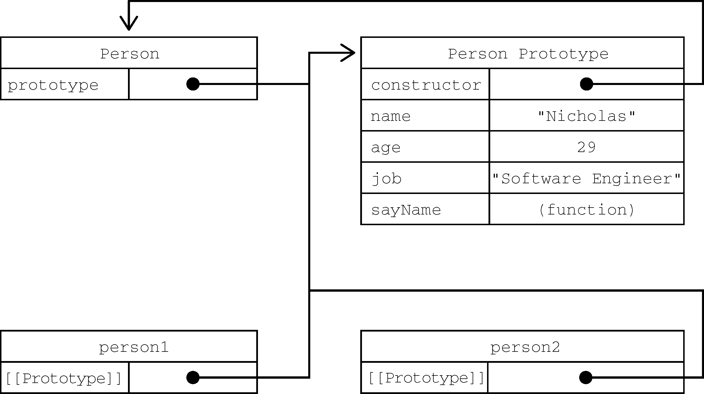
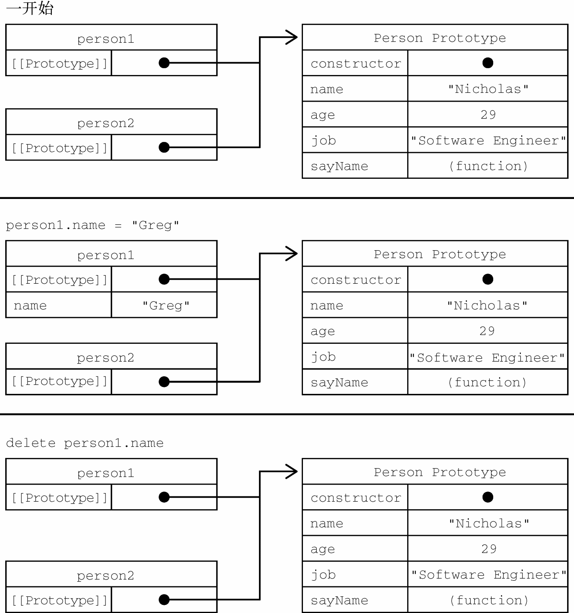
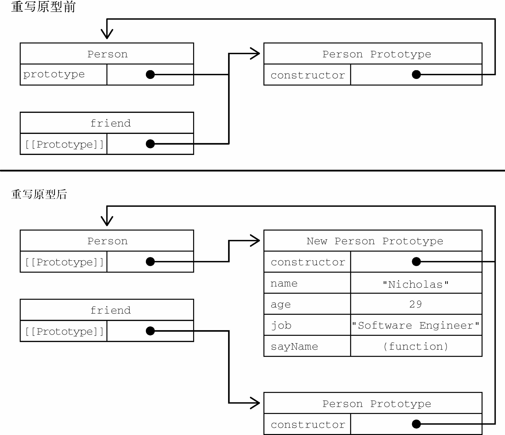

虽然使用Object构造函数或对象字面量可以方便地创建对象，但这些方式也有明显不足：创建具有同样接口的多个对象需要重复编写很多代码。
综观ECMAScript规范的历次发布，每个版本的特性似乎都出人意料。ECMAScript 5.1并没有正式支持面向对象的结构，比如类或继承。但是，正如接下来几节会介绍的，巧妙地运用原型式继承可以成功地模拟同样的行为。
ECMAScript 6开始正式支持类和继承。ES6的类旨在完全涵盖之前规范设计的基于原型的继承模式。不过，无论从哪方面看，ES6的类都仅仅是封装了ES5.1构造函数加原型继承的语法糖而已。
注意 不要误会：采用面向对象编程模式的JavaScript代码还是应该使用ECMAScript 6的类。但不管怎么说，理解ES6类出现之前的惯例总是有益无害的。特别是ES6的类定义本身就相当于对原有结构的封装。因此，在介绍ES6的类之前，本书会循序渐进地介绍被类取代的那些底层概念。
工厂模式是一种众所周知的设计模式，广泛应用于软件工程领域，用于抽象创建特定对象的过程。（本书后面还会讨论其他设计模式及其在JavaScript中的实现。）下面的例子展示了一种按照特定接口创建对象的方式：
function createperson(name, age, job) {
let o = new object();
o.name = name;
o.age = age;
o.job = job;
o.sayname = function() {
console.log(this.name);
};
return o;
}
let person1 = createperson("nicholas", 29, "software engineer");
let person2 = createperson("greg", 27, "doctor");这里，函数createPerson()接收3个参数，根据这几个参数构建了一个包含Person信息的对象。可以用不同的参数多次调用这个函数，每次都会返回包含3个属性和1个方法的对象。这种工厂模式虽然可以解决创建多个类似对象的问题，但没有解决对象标识问题（即新创建的对象是什么类型）。
前面几章提到过，ECMAScript中的构造函数是用于创建特定类型对象的。像Object和Array这样的原生构造函数，运行时可以直接在执行环境中使用。当然也可以自定义构造函数，以函数的形式为自己的对象类型定义属性和方法。
比如，前面的例子使用构造函数模式可以这样写：
function person(name, age, job){
this.name = name;
this.age = age;
this.job = job;
this.sayname = function() {
console.log(this.name);
};
}
let person1 = new person("nicholas", 29, "software engineer");
let person2 = new person("greg", 27, "doctor");
person1.sayname(); // nicholas
person2.sayname(); // greg在这个例子中，Person()构造函数代替了createPerson()工厂函数。实际上，Person()内部的代码跟createPerson()基本是一样的，只是有如下区别。
this。return。另外，要注意函数名Person的首字母大写了。按照惯例，构造函数名称的首字母都是要大写的，非构造函数则以小写字母开头。这是从面向对象编程语言那里借鉴的，有助于在ECMAScript中区分构造函数和普通函数。毕竟ECMAScript的构造函数就是能创建对象的函数。
要创建Person的实例，应使用new操作符。以这种方式调用构造函数会执行如下操作。
(1) 在内存中创建一个新对象。
(2) 这个新对象内部的[[Prototype]]特性被赋值为构造函数的prototype属性。
(3) 构造函数内部的this被赋值为这个新对象（即this指向新对象）。
(4) 执行构造函数内部的代码（给新对象添加属性）。
(5) 如果构造函数返回非空对象，则返回该对象；否则，返回刚创建的新对象。
上一个例子的最后，person1和person2分别保存着Person的不同实例。这两个对象都有一个constructor属性指向Person，如下所示：
console.log(person1.constructor == person); // true
console.log(person2.constructor == person); // true
constructor本来是用于标识对象类型的。不过，一般认为instanceof操作符是确定对象类型更可靠的方式。前面例子中的每个对象都是Object的实例，同时也是Person的实例，如下面调用instanceof操作符的结果所示：
console.log(person1 instanceof object); // true
console.log(person1 instanceof person); // true
console.log(person2 instanceof object); // true
console.log(person2 instanceof person); // true定义自定义构造函数可以确保实例被标识为特定类型，相比于工厂模式，这是一个很大的好处。在这个例子中，person1和person2之所以也被认为是Object的实例，是因为所有自定义对象都继承自Object（后面再详细讨论这一点）。
构造函数不一定要写成函数声明的形式。赋值给变量的函数表达式也可以表示构造函数：
let person = function(name, age, job) {
this.name = name;
this.age = age;
this.job = job;
this.sayname = function() {
console.log(this.name);
};
}
let person1 = new person("nicholas", 29, "software engineer");
let person2 = new person("greg", 27, "doctor");
person1.sayname(); // nicholas
person2.sayname(); // greg
console.log(person1 instanceof object); // true
console.log(person1 instanceof person); // true
console.log(person2 instanceof object); // true
console.log(person2 instanceof person); // true在实例化时，如果不想传参数，那么构造函数后面的括号可加可不加。只要有new操作符，就可以调用相应的构造函数：
function person() {
this.name = "jake";
this.sayname = function() {
console.log(this.name);
};
}
let person1 = new person();
let person2 = new person;
person1.sayname(); // jake
person2.sayname(); // jake
console.log(person1 instanceof object); // true
console.log(person1 instanceof person); // true
console.log(person2 instanceof object); // true
console.log(person2 instanceof person); // true构造函数也是函数
构造函数与普通函数唯一的区别就是调用方式不同。除此之外，构造函数也是函数。并没有把某个函数定义为构造函数的特殊语法。任何函数只要使用new操作符调用就是构造函数，而不使用new操作符调用的函数就是普通函数。比如，前面的例子中定义的Person()可以像下面这样调用：
// 作为构造函数
let person = new person("nicholas", 29, "software engineer");
person.sayname(); // "nicholas"
// 作为函数调用
person("greg", 27, "doctor"); // 添加到window对象
window.sayname(); // "greg"
// 在另一个对象的作用域中调用
let o = new object();
person.call(o, "kristen", 25, "nurse");
o.sayname(); // "kristen"这个例子一开始展示了典型的构造函数调用方式，即使用new操作符创建一个新对象。然后是普通函数的调用方式，这时候没有使用new操作符调用Person()，结果会将属性和方法添加到window对象。这里要记住，在调用一个函数而没有明确设置this值的情况下（即没有作为对象的方法调用，或者没有使用call()/apply()调用），this始终指向Global对象（在浏览器中就是window对象）。因此在上面的调用之后，window对象上就有了一个sayName()方法，调用它会返回"Greg"。最后展示的调用方式是通过call()（或apply()）调用函数，同时将特定对象指定为作用域。这里的调用将对象o指定为Person()内部的this值，因此执行完函数代码后，所有属性和sayName()方法都会添加到对象o上面。
构造函数的问题
构造函数虽然有用，但也不是没有问题。构造函数的主要问题在于，其定义的方法会在每个实例上都创建一遍。因此对前面的例子而言，person1和person2都有名为sayName()的方法，但这两个方法不是同一个Function实例。我们知道，ECMAScript中的函数是对象，因此每次定义函数时，都会初始化一个对象。逻辑上讲，这个构造函数实际上是这样的：
function person(name, age, job){
this.name = name;
this.age = age;
this.job = job;
this.sayname = new function("console.log(this.name)"); // 逻辑等价
}这样理解这个构造函数可以更清楚地知道，每个Person实例都会有自己的Function实例用于显示name属性。当然了，以这种方式创建函数会带来不同的作用域链和标识符解析。但创建新Function实例的机制是一样的。因此不同实例上的函数虽然同名却不相等，如下所示：
console.log(person1.sayname == person2.sayname); // false因为都是做一样的事，所以没必要定义两个不同的Function实例。况且，this对象可以把函数与对象的绑定推迟到运行时。
要解决这个问题，可以把函数定义转移到构造函数外部：
function person(name, age, job){
this.name = name;
this.age = age;
this.job = job;
this.sayname = sayname;
}
function sayname() {
console.log(this.name);
}
let person1 = new person("nicholas", 29, "software engineer");
let person2 = new person("greg", 27, "doctor");
person1.sayname(); // nicholas
person2.sayname(); // greg在这里，sayName()被定义在了构造函数外部。在构造函数内部，sayName属性等于全局sayName()函数。因为这一次sayName属性中包含的只是一个指向外部函数的指针，所以person1和person2共享了定义在全局作用域上的sayName()函数。这样虽然解决了相同逻辑的函数重复定义的问题，但全局作用域也因此被搞乱了，因为那个函数实际上只能在一个对象上调用。如果这个对象需要多个方法，那么就要在全局作用域中定义多个函数。这会导致自定义类型引用的代码不能很好地聚集一起。这个新问题可以通过原型模式来解决。
每个函数都会创建一个prototype属性，这个属性是一个对象，包含应该由特定引用类型的实例共享的属性和方法。实际上，这个对象就是通过调用构造函数创建的对象的原型。使用原型对象的好处是，在它上面定义的属性和方法可以被对象实例共享。原来在构造函数中直接赋给对象实例的值，可以直接赋值给它们的原型，如下所示：
function person() {}
person.prototype.name = "nicholas";
person.prototype.age = 29;
person.prototype.job = "software engineer";
person.prototype.sayname = function() {
console.log(this.name);
};
let person1 = new person();
person1.sayname(); // "nicholas"
let person2 = new person();
person2.sayname(); // "nicholas"
console.log(person1.sayname == person2.sayname); // true使用函数表达式也可以：
let person = function() {};
person.prototype.name = "nicholas";
person.prototype.age = 29;
person.prototype.job = "software engineer";
person.prototype.sayname = function() {
console.log(this.name);
};
let person1 = new person();
person1.sayname(); // "nicholas"
let person2 = new person();
person2.sayname(); // "nicholas"
console.log(person1.sayname == person2.sayname); // true这里，所有属性和sayName()方法都直接添加到了Person的prototype属性上，构造函数体中什么也没有。但这样定义之后，调用构造函数创建的新对象仍然拥有相应的属性和方法。与构造函数模式不同，使用这种原型模式定义的属性和方法是由所有实例共享的。因此person1和person2访问的都是相同的属性和相同的sayName()函数。要理解这个过程，就必须理解ECMAScript中原型的本质。
理解原型
无论何时，只要创建一个函数，就会按照特定的规则为这个函数创建一个prototype属性（指向原型对象）。默认情况下，所有原型对象自动获得一个名为constructor的属性，指回与之关联的构造函数。对前面的例子而言，Person.prototype.constructor指向Person。然后，因构造函数而异，可能会给原型对象添加其他属性和方法。
在自定义构造函数时，原型对象默认只会获得constructor属性，其他的所有方法都继承自Object。每次调用构造函数创建一个新实例，这个实例的内部[[Prototype]]指针就会被赋值为构造函数的原型对象。脚本中没有访问这个[[Prototype]]特性的标准方式，但Firefox、Safari和Chrome会在每个对象上暴露__proto__属性，通过这个属性可以访问对象的原型。在其他实现中，这个特性完全被隐藏了。关键在于理解这一点：实例与构造函数原型之间有直接的联系，但实例与构造函数之间没有。
这种关系不好可视化，但可以通过下面的代码来理解原型的行为：
/**
* 构造函数可以是函数表达式
* 也可以是函数声明，因此以下两种形式都可以：
* function person() {}
* let person = function() {}
*/
function person() {}
/**
* 声明之后，构造函数就有了一个
* 与之关联的原型对象：
*/
console.log(typeof person.prototype);
console.log(person.prototype);
// {
// constructor: f person(),
// __proto__: object
// }
/**
* 如前所述，构造函数有一个prototype属性
* 引用其原型对象，而这个原型对象也有一个
* constructor属性，引用这个构造函数
* 换句话说，两者循环引用：
*/
console.log(person.prototype.constructor === person); // true
/**
* 正常的原型链都会终止于object的原型对象
* object原型的原型是null
*/
console.log(person.prototype.__proto__ === object.prototype); // true
console.log(person.prototype.__proto__.constructor === object); // true
console.log(person.prototype.__proto__.__proto__ === null); // true
console.log(person.prototype.__proto__);
// {
// constructor: f object(),
// tostring: ...
// hasownproperty: ...
// isprototypeof: ...
// ...
// }
let person1 = new person(),
person2 = new person();
/**
* 构造函数、原型对象和实例
* 是3个完全不同的对象：
*/
console.log(person1 !== person); // true
console.log(person1 !== person.prototype); // true
console.log(person.prototype !== person); // true
/**
* 实例通过__proto__链接到原型对象，
* 它实际上指向隐藏特性[[prototype]]
*
* 构造函数通过prototype属性链接到原型对象
*
* 实例与构造函数没有直接联系，与原型对象有直接联系
*/
console.log(person1.__proto__ === person.prototype); // true
conosle.log(person1.__proto__.constructor === person); // true
/**
* 同一个构造函数创建的两个实例
* 共享同一个原型对象：
*/
console.log(person1.__proto__ === person2.__proto__); // true
/**
* instanceof检查实例的原型链中
* 是否包含指定构造函数的原型：
*/
console.log(person1 instanceof person); // true
console.log(person1 instanceof object); // true
console.log(person.prototype instanceof object); // true对于前面例子中的Person构造函数和Person.prototype，可以通过图8-1看出各个对象之间的关系。

图 8-1
图8-1展示了Person构造函数、Person的原型对象和Person现有两个实例之间的关系。注意，Person.prototype指向原型对象，而Person.prototype.contructor指回Person构造函数。原型对象包含constructor属性和其他后来添加的属性。Person的两个实例person1和person2都只有一个内部属性指回Person.prototype，而且两者都与构造函数没有直接联系。另外要注意，虽然这两个实例都没有属性和方法，但person1.sayName()可以正常调用。这是由于对象属性查找机制的原因。
虽然不是所有实现都对外暴露了[[Prototype]]，但可以使用isPrototypeOf()方法确定两个对象之间的这种关系。本质上，isPrototypeOf()会在传入参数的[[Prototype]]指向调用它的对象时返回true，如下所示：
console.log(person.prototype.isprototypeof(person1)); // true
console.log(person.prototype.isprototypeof(person2)); // true这里通过原型对象调用isPrototypeOf()方法检查了person1和person2。因为这两个例子内部都有链接指向Person.prototype，所以结果都返回true。
ECMAScript的Object类型有一个方法叫Object.getPrototypeOf()，返回参数的内部特性[[Prototype]]的值。例如：
console.log(object.getprototypeof(person1) == person.prototype); // true
console.log(object.getprototypeof(person1).name); // "nicholas"第一行代码简单确认了Object.getPrototypeOf()返回的对象就是传入对象的原型对象。第二行代码则取得了原型对象上name属性的值，即"Nicholas"。使用Object.getPrototypeOf()可以方便地取得一个对象的原型，而这在通过原型实现继承时显得尤为重要（本章后面会介绍）。
Object类型还有一个setPrototypeOf()方法，可以向实例的私有特性[[Prototype]]写入一个新值。这样就可以重写一个对象的原型继承关系：
let biped = {
numlegs: 2
};
let person = {
name: 'matt'
};
object.setprototypeof(person, biped);
console.log(person.name); // matt
console.log(person.numlegs); // 2
console.log(object.getprototypeof(person) === biped); // true警告
Object.setPrototypeOf()可能会严重影响代码性能。Mozilla文档说得很清楚：“在所有浏览器和JavaScript引擎中，修改继承关系的影响都是微妙且深远的。这种影响并不仅是执行Object.setPrototypeOf()语句那么简单，而是会涉及所有访问了那些修改过[[Prototype]]的对象的代码。”
为避免使用Object.setPrototypeOf()可能造成的性能下降，可以通过Object.create()来创建一个新对象，同时为其指定原型：
let biped = {
numlegs: 2
};
let person = object.create(biped);
person.name = 'matt';
console.log(person.name); // matt
console.log(person.numlegs); // 2
console.log(object.getprototypeof(person) === biped); // true原型层级
在通过对象访问属性时，会按照这个属性的名称开始搜索。搜索开始于对象实例本身。如果在这个实例上发现了给定的名称，则返回该名称对应的值。如果没有找到这个属性，则搜索会沿着指针进入原型对象，然后在原型对象上找到属性后，再返回对应的值。因此，在调用person1.sayName()时，会发生两步搜索。首先，JavaScript引擎会问：“person1实例有sayName属性吗？”答案是没有。然后，继续搜索并问：“person1的原型有sayName属性吗？”答案是有。于是就返回了保存在原型上的这个函数。在调用person2.sayName()时，会发生同样的搜索过程，而且也会返回相同的结果。这就是原型用于在多个对象实例间共享属性和方法的原理。
注意 前面提到的
constructor属性只存在于原型对象，因此通过实例对象也是可以访问到的。
虽然可以通过实例读取原型对象上的值，但不可能通过实例重写这些值。如果在实例上添加了一个与原型对象中同名的属性，那就会在实例上创建这个属性，这个属性会遮住原型对象上的属性。下面看一个例子：
function person() {}
person.prototype.name = "nicholas";
person.prototype.age = 29;
person.prototype.job = "software engineer";
person.prototype.sayname = function() {
console.log(this.name);
};
let person1 = new person();
let person2 = new person();
person1.name = "greg";
console.log(person1.name); // "greg"，来自实例
console.log(person2.name); // "nicholas"，来自原型在这个例子中，person1的name属性遮蔽了原型对象上的同名属性。虽然person1.name和person2.name都返回了值，但前者返回的是"Greg"（来自实例），后者返回的是"Nicholas"（来自原型）。当console.log()访问person1.name时，会先在实例上搜索个属性。因为这个属性在实例上存在，所以就不会再搜索原型对象了。而在访问person2.name时，并没有在实例上找到这个属性，所以会继续搜索原型对象并使用定义在原型上的属性。
只要给对象实例添加一个属性，这个属性就会遮蔽（shadow）原型对象上的同名属性，也就是虽然不会修改它，但会屏蔽对它的访问。即使在实例上把这个属性设置为null，也不会恢复它和原型的联系。不过，使用delete操作符可以完全删除实例上的这个属性，从而让标识符解析过程能够继续搜索原型对象。
function person() {}
person.prototype.name = "nicholas";
person.prototype.age = 29;
person.prototype.job = "software engineer";
person.prototype.sayname = function() {
console.log(this.name);
};
let person1 = new person();
let person2 = new person();
person1.name = "greg";
console.log(person1.name); // "greg"，来自实例
console.log(person2.name); // "nicholas"，来自原型
delete person1.name;
console.log(person1.name); // "nicholas"，来自原型这个修改后的例子中使用delete删除了person1.name，这个属性之前以"Greg"遮蔽了原型上的同名属性。然后原型上name属性的联系就恢复了，因此再访问person1.name时，就会返回原型对象上这个属性的值。
hasOwnProperty()方法用于确定某个属性是在实例上还是在原型对象上。这个方法是继承自Object的，会在属性存在于调用它的对象实例上时返回true，如下面的例子所示：
function person() {}
person.prototype.name = "nicholas";
person.prototype.age = 29;
person.prototype.job = "software engineer";
person.prototype.sayname = function() {
console.log(this.name);
};
let person1 = new person();
let person2 = new person();
console.log(person1.hasownproperty("name")); // false
person1.name = "greg";
console.log(person1.name); // "greg"，来自实例
console.log(person1.hasownproperty("name")); // true
console.log(person2.name); // "nicholas"，来自原型
console.log(person2.hasownproperty("name")); // false
delete person1.name;
console.log(person1.name); // "nicholas"，来自原型
console.log(person1.hasownproperty("name")); // false在这个例子中，通过调用hasOwnProperty()能够清楚地看到访问的是实例属性还是原型属性。调用person1.hasOwnProperty("name")只在重写person1上name属性的情况下才返回true，表明此时name是一个实例属性，不是原型属性。图8-2形象地展示了上面例子中各个步骤的状态。（为简单起见，图中省略了Person构造函数。）

图 8-2
注意 ECMAScript的
Object.getOwnPropertyDescriptor()方法只对实例属性有效。要取得原型属性的描述符，就必须直接在原型对象上调用Object.getOwnPropertyDescriptor()。
原型和in操作符
有两种方式使用in操作符：单独使用和在for-in循环中使用。在单独使用时，in操作符会在可以通过对象访问指定属性时返回true，无论该属性是在实例上还是在原型上。来看下面的例子：
function person() {}
person.prototype.name = "nicholas";
person.prototype.age = 29;
person.prototype.job = "software engineer";
person.prototype.sayname = function() {
console.log(this.name);
};
let person1 = new person();
let person2 = new person();
console.log(person1.hasownproperty("name")); // false
console.log("name" in person1); // true
person1.name = "greg";
console.log(person1.name); // "greg"，来自实例
console.log(person1.hasownproperty("name")); // true
console.log("name" in person1); // true
console.log(person2.name); // "nicholas"，来自原型
console.log(person2.hasownproperty("name")); // false
console.log("name" in person2); // true
delete person1.name;
console.log(person1.name); // "nicholas"，来自原型
console.log(person1.hasownproperty("name")); // false
console.log("name" in person1); // true在上面整个例子中，name随时可以通过实例或通过原型访问到。因此，调用"name" in persoon1时始终返回true，无论这个属性是否在实例上。如果要确定某个属性是否存在于原型上，则可以像下面这样同时使用hasOwnProperty()和in操作符：
function hasprototypeproperty(object, name){
return !object.hasownproperty(name) && (name in object);
}只要通过对象可以访问，in操作符就返回true，而hasOwnProperty()只有属性存在于实例上时才返回true。因此，只要in操作符返回true且hasOwnProperty()返回false，就说明该属性是一个原型属性。来看下面的例子：
function person() {}
person.prototype.name = "nicholas";
person.prototype.age = 29;
person.prototype.job = "software engineer";
person.prototype.sayname = function() {
console.log(this.name);
};
let person = new person();
console.log(hasprototypeproperty(person, "name")); // true
person.name = "greg";
console.log(hasprototypeproperty(person, "name")); // false在这里，name属性首先只存在于原型上，所以hasPrototypeProperty()返回true。而在实例上重写这个属性后，实例上也有了这个属性，因此hasPrototypeProperty()返回false。即便此时原型对象还有name属性，但因为实例上的属性遮蔽了它，所以不会用到。
在for-in循环中使用in操作符时，可以通过对象访问且可以被枚举的属性都会返回，包括实例属性和原型属性。遮蔽原型中不可枚举（[[Enumerable]]特性被设置为false）属性的实例属性也会在for-in循环中返回，因为默认情况下开发者定义的属性都是可枚举的。
要获得对象上所有可枚举的实例属性，可以使用Object.keys()方法。这个方法接收一个对象作为参数，返回包含该对象所有可枚举属性名称的字符串数组。比如：
function person() {}
person.prototype.name = "nicholas";
person.prototype.age = 29;
person.prototype.job = "software engineer";
person.prototype.sayname = function() {
console.log(this.name);
};
let keys = object.keys(person.prototype);
console.log(keys); // "name,age,job,sayname"
let p1 = new person();
p1.name = "rob";
p1.age = 31;
let p1keys = object.keys(p1);
console.log(p1keys); // "[name,age]"这里，keys变量保存的数组中包含"name"、"age"、"job"和"sayName"。这是正常情况下通过for-in返回的顺序。而在Person的实例上调用时，Object.keys()返回的数组中只包含"name"和"age"两个属性。
如果想列出所有实例属性，无论是否可以枚举，都可以使用Object.getOwnPropertyNames()：
let keys = object.getownpropertynames(person.prototype);
console.log(keys); // "[constructor,name,age,job,sayname]"注意，返回的结果中包含了一个不可枚举的属性constructor。Object.keys()和Object.getOwnPropertyNames()在适当的时候都可用来代替for-in循环。
在ECMAScript 6新增符号类型之后，相应地出现了增加一个Object.getOwnPropertyNames()的兄弟方法的需求，因为以符号为键的属性没有名称的概念。因此，Object.getOwnPropertySymbols()方法就出现了，这个方法与Object.getOwnPropertyNames()类似，只是针对符号而已：
let k1 = symbol('k1'),
k2 = symbol('k2');
let o = {
[k1]: 'k1',
[k2]: 'k2'
};
console.log(object.getownpropertysymbols(o));
// [symbol(k1), symbol(k2)]属性枚举顺序
for-in循环、Object.keys()、Object.getOwnPropertyNames()、Object.getOwnPropertySymbols()以及Object.assign()在属性枚举顺序方面有很大区别。for-in循环和Object.keys()的枚举顺序是不确定的，取决于JavaScript引擎，可能因浏览器而异。
Object.getOwnPropertyNames()、Object.getOwnPropertySymbols()和Object.assign()的枚举顺序是确定性的。先以升序枚举数值键，然后以插入顺序枚举字符串和符号键。在对象字面量中定义的键以它们逗号分隔的顺序插入。
let k1 = symbol('k1'),
k2 = symbol('k2');
let o = {
1: 1,
first: 'first',
[k1]: 'sym2',
second: 'second',
0: 0
};
o[k2] = 'sym2';
o[3] = 3;
o.third = 'third';
o[2] = 2;
console.log(object.getownpropertynames(o));
// ["0", "1", "2", "3", "first", "second", "third"]
console.log(object.getownpropertysymbols(o));
// [symbol(k1), symbol(k2)]在JavaScript有史以来的大部分时间内，迭代对象属性都是一个难题。ECMAScript 2017新增了两个静态方法，用于将对象内容转换为序列化的——更重要的是可迭代的——格式。这两个静态方法Object.values()和Object.entries()接收一个对象，返回它们内容的数组。Object.values()返回对象值的数组，Object.entries()返回键/值对的数组。
下面的示例展示了这两个方法：
const o = {
foo: 'bar',
baz: 1,
qux: {}
};
console.log(object.values(o));
// ["bar", 1, {}]
console.log(object.entries((o)));
// [["foo", "bar"], ["baz", 1], ["qux", {}]]注意，非字符串属性会被转换为字符串输出。另外，这两个方法执行对象的浅复制：
const o = {
qux: {}
};
console.log(object.values(o)[0] === o.qux);
// true
console.log(object.entries(o)[0][1] === o.qux);
// true符号属性会被忽略：
const sym = symbol();
const o = {
[sym]: 'foo'
};
console.log(object.values(o));
// []
console.log(object.entries((o)));
// []其他原型语法
有读者可能注意到了，在前面的例子中，每次定义一个属性或方法都会把Person.prototype重写一遍。为了减少代码冗余，也为了从视觉上更好地封装原型功能，直接通过一个包含所有属性和方法的对象字面量来重写原型成为了一种常见的做法，如下面的例子所示：
function person() {}
person.prototype = {
name: "nicholas",
age: 29,
job: "software engineer",
sayname() {
console.log(this.name);
}
};在这个例子中，Person.prototype被设置为等于一个通过对象字面量创建的新对象。最终结果是一样的，只有一个问题：这样重写之后，Person.prototype的constructor属性就不指向Person了。在创建函数时，也会创建它的prototype对象，同时会自动给这个原型的constructor属性赋值。而上面的写法完全重写了默认的prototype对象，因此其constructor属性也指向了完全不同的新对象（Object构造函数），不再指向原来的构造函数。虽然instanceof操作符还能可靠地返回值，但我们不能再依靠constructor属性来识别类型了，如下面的例子所示：
let friend = new person();
console.log(friend instanceof object); // true
console.log(friend instanceof person); // true
console.log(friend.constructor == person); // false
console.log(friend.constructor == object); // true这里，instanceof仍然对Object和Person都返回true。但constructor属性现在等于Object而不是Person了。如果constructor的值很重要，则可以像下面这样在重写原型对象时专门设置一下它的值：
function person() {
}
person.prototype = {
constructor: person,
name: "nicholas",
age: 29,
job: "software engineer",
sayname() {
console.log(this.name);
}
};这次的代码中特意包含了constructor属性，并将它设置为Person，保证了这个属性仍然包含恰当的值。
但要注意，以这种方式恢复constructor属性会创建一个[[Enumerable]]为true的属性。而原生constructor属性默认是不可枚举的。因此，如果你使用的是兼容ECMAScript的JavaScript引擎，那可能会改为使用Object.defineProperty()方法来定义constructor属性：
function person() {}
person.prototype = {
name: "nicholas",
age: 29,
job: "software engineer",
sayname() {
console.log(this.name);
}
};
// 恢复constructor属性
object.defineproperty(person.prototype, "constructor", {
enumerable: false,
value: person
});原型的动态性
因为从原型上搜索值的过程是动态的，所以即使实例在修改原型之前已经存在，任何时候对原型对象所做的修改也会在实例上反映出来。下面是一个例子：
let friend = new person();
person.prototype.sayhi = function() {
console.log("hi");
};
friend.sayhi(); // "hi"，没问题！以上代码先创建一个Person实例并保存在friend中。然后一条语句在Person.prototype上添加了一个名为sayHi()的方法。虽然friend实例是在添加方法之前创建的，但它仍然可以访问这个方法。之所以会这样，主要原因是实例与原型之间松散的联系。在调用friend.sayHi()时，首先会从这个实例中搜索名为sayHi的属性。在没有找到的情况下，运行时会继续搜索原型对象。因为实例和原型之间的链接就是简单的指针，而不是保存的副本，所以会在原型上找到sayHi属性并返回这个属性保存的函数。
虽然随时能给原型添加属性和方法，并能够立即反映在所有对象实例上，但这跟重写整个原型是两回事。实例的[[Prototype]]指针是在调用构造函数时自动赋值的，这个指针即使把原型修改为不同的对象也不会变。重写整个原型会切断最初原型与构造函数的联系，但实例引用的仍然是最初的原型。记住，实例只有指向原型的指针，没有指向构造函数的指针。来看下面的例子：
function person() {}
let friend = new person();
person.prototype = {
constructor: person,
name: "nicholas",
age: 29,
job: "software engineer",
sayname() {
console.log(this.name);
}
};
friend.sayname(); // 错误在这个例子中，Person的新实例是在重写原型对象之前创建的。在调用friend.sayName()的时候，会导致错误。这是因为firend指向的原型还是最初的原型，而这个原型上并没有sayName属性。图8-3展示了这里面的原因。

图 8-3
重写构造函数上的原型之后再创建的实例才会引用新的原型。而在此之前创建的实例仍然会引用最初的原型。
原生对象原型
原型模式之所以重要，不仅体现在自定义类型上，而且还因为它也是实现所有原生引用类型的模式。所有原生引用类型的构造函数（包括Object、Array、String等）都在原型上定义了实例方法。比如，数组实例的sort()方法就是Array.prototype上定义的，而字符串包装对象的substring()方法也是在String.prototype上定义的，如下所示：
console.log(typeof array.prototype.sort); // "function"
console.log(typeof string.prototype.substring); // "function"通过原生对象的原型可以取得所有默认方法的引用，也可以给原生类型的实例定义新的方法。可以像修改自定义对象原型一样修改原生对象原型，因此随时可以添加方法。比如，下面的代码就给String原始值包装类型的实例添加了一个startsWith()方法：
string.prototype.startswith = function (text) {
return this.indexof(text) === 0;
};
let msg = "hello world!";
console.log(msg.startswith("hello")); // true如果给定字符串的开头出现了调用startsWith()方法的文本，那么该方法会返回true。因为这个方法是被定义在String.prototype上，所以当前环境下所有的字符串都可以使用这个方法。msg是个字符串，在读取它的属性时，后台会自动创建String的包装实例，从而找到并调用startsWith()方法。
注意 尽管可以这么做，但并不推荐在产品环境中修改原生对象原型。这样做很可能造成误会，而且可能引发命名冲突（比如一个名称在某个浏览器实现中不存在，在另一个实现中却存在）。另外还有可能意外重写原生的方法。推荐的做法是创建一个自定义的类，继承原生类型。
原型的问题
原型模式也不是没有问题。首先，它弱化了向构造函数传递初始化参数的能力，会导致所有实例默认都取得相同的属性值。虽然这会带来不便，但还不是原型的最大问题。原型的最主要问题源自它的共享特性。
我们知道，原型上的所有属性是在实例间共享的，这对函数来说比较合适。另外包含原始值的属性也还好，如前面例子中所示，可以通过在实例上添加同名属性来简单地遮蔽原型上的属性。真正的问题来自包含引用值的属性。来看下面的例子：
function person() {}
person.prototype = {
constructor: person,
name: "nicholas",
age: 29,
job: "software engineer",
friends: ["shelby", "court"],
sayname() {
console.log(this.name);
}
};
let person1 = new person();
let person2 = new person();
person1.friends.push("van");
console.log(person1.friends); // "shelby,court,van"
console.log(person2.friends); // "shelby,court,van"
console.log(person1.friends === person2.friends); // true这里，Person.prototype有一个名为friends的属性，它包含一个字符串数组。然后这里创建了两个Person的实例。person1.friends通过push方法向数组中添加了一个字符串。由于这个friends属性存在于Person.prototype而非person1上，新加的这个字符串也会在（指向同一个数组的）person2.friends上反映出来。如果这是有意在多个实例间共享数组，那没什么问题。但一般来说，不同的实例应该有属于自己的属性副本。这就是实际开发中通常不单独使用原型模式的原因。